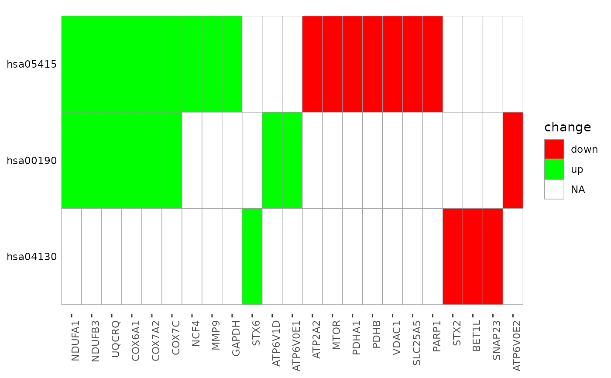

Create Terms by Genes Heatmap
term_gene_heatmap(
result_df,
genes_df,
num_terms = 10,
use_description = FALSE,
low = "red",
mid = "black",
high = "green",
legend_title = "change",
sort_terms_by_p = FALSE,
...
)A dataframe of pathfindR results that must contain the following columns:
Description of the enriched term (necessary if use_description = TRUE)
ID of the enriched term (necessary if use_description = FALSE)
the highest adjusted-p value of the given term over all iterations
the up-regulated genes in the input involved in the given term's gene set, comma-separated
the down-regulated genes in the input involved in the given term's gene set, comma-separated
the input data that was used with run_pathfindR.
It must be a data frame with 3 columns:
Gene Symbol (Gene Symbol)
Change value, e.g. log(fold change) (optional)
p value, e.g. adjusted p value associated with differential expression
The change values in this data frame are used to color the affected genes
Number of top enriched terms to use while creating the plot. Set to NULL to use
all enriched terms (default = 10)
Boolean argument to indicate whether term descriptions
(in the 'Term_Description' column) should be used. (default = FALSE)
a string indicating the color of 'low' values in the coloring gradient (default = 'green')
a string indicating the color of 'mid' values in the coloring gradient (default = 'black')
a string indicating the color of 'high' values in the coloring gradient (default = 'red')
legend title (default = 'change')
boolean to indicate whether to sort terms by 'lowest_p'
(TRUE) or by number of genes (FALSE) (default = FALSE)
additional arguments for input_processing (used if
genes_df is provided)
a ggplot2 object of a heatmap where rows are enriched terms and
columns are involved input genes. If genes_df is provided, colors of
the tiles indicate the change values.
term_gene_heatmap(example_pathfindR_output, num_terms = 3)
